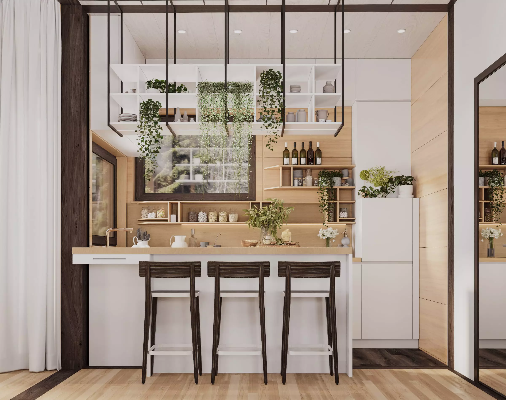
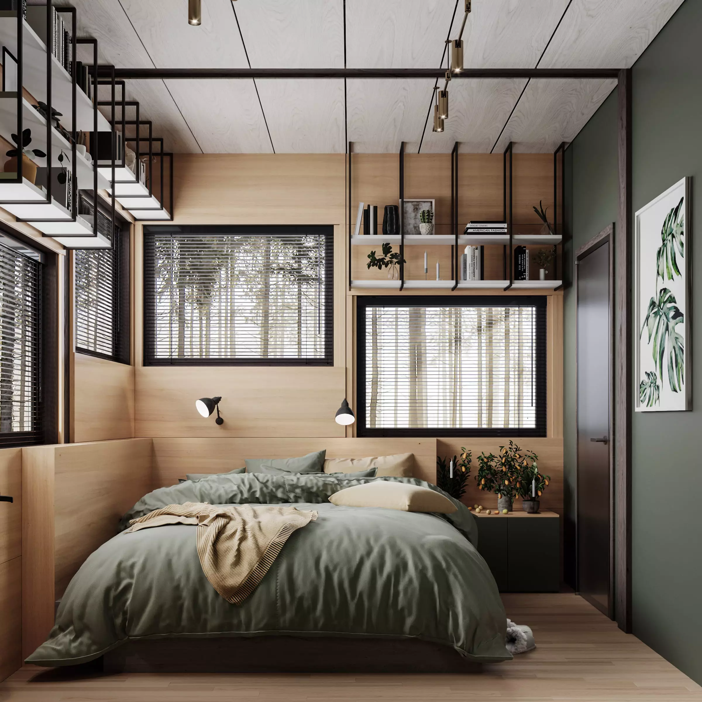

BasicBB

Basic Building Blocks
My blog and GitHub slightly empty in the past few months. I started spending less time on coding itself. I guess this happened to me naturally. I was a software engineer for the past five years and I was building amazing things in good teams and companies. I started to feel that I would like to help other people more than being focus on personal success.
That’s why I started spending much more of my spare time on our family project which is called basicbb - Basic Building Blocks. And #TechScaling but that’s a story for the next post.
This project was born as a effect of next things: real estate is less and less affordable by younger people, living in the city becoming uncomfortable by different factors. And another important key is modularity, we are offering lego in a way. We are trying to open eyes on things which people don’t adapted yet.

Let’s imagine that you earned your first 50k and trying to get a lone and pay it for next 20 years… On other hand you can come to us and purchase BB40 model and upgrade it later, no lone, everything belongs to you not to the bank. Later on when you and your partner will think about kids you can easily extend your house with another bed room. Terrace? Sure. I hope I gave you the feeling of possibilities which we offer, everything else is limited by your imagination :)

For more information please check this out basicbb.com
I kindly ask to support our project with some follows ❤️